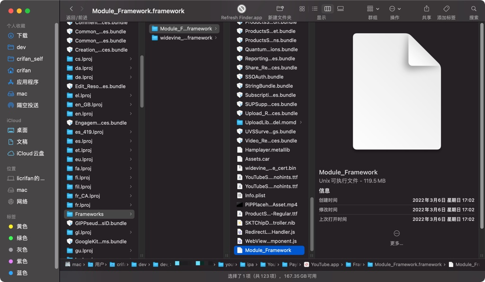
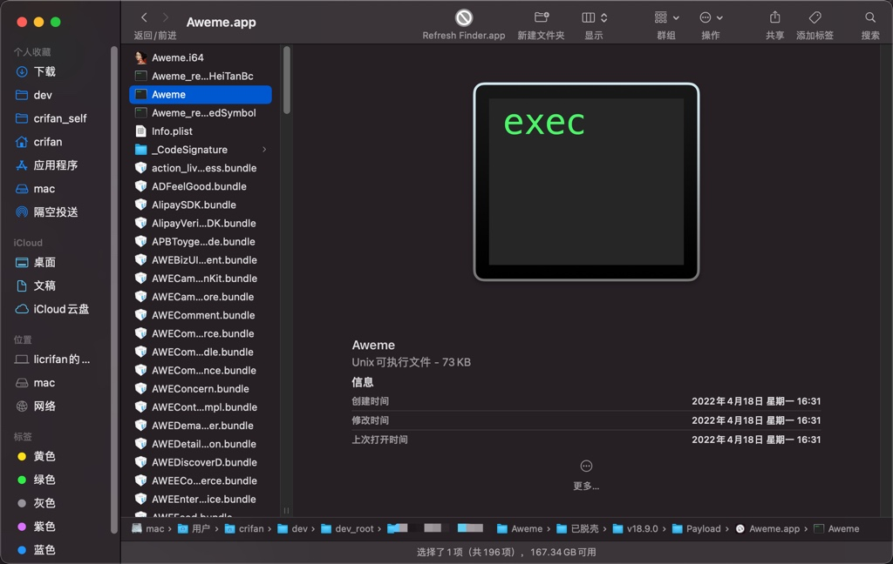
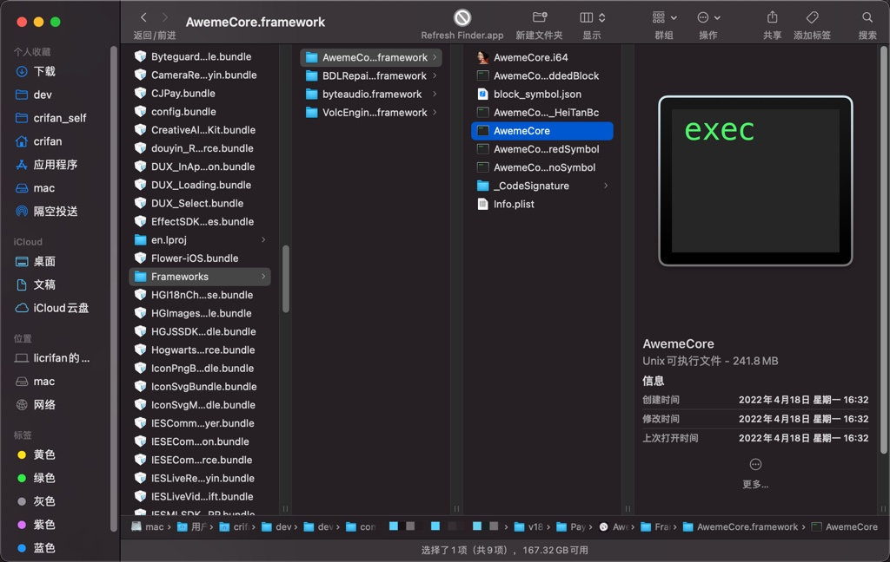

从ipa中找到二进制
TODO：
- 【未解决】静态分析抖音二进制寻找越狱检测手段
【已解决】如何从脱壳后的抖音的IPA文件中得到二进制文件
相关
- 【已解决】越狱iPhone中抖音app的安装目录安装位置
- 【已解决】研究iOS中app的目录的UUID类的值和app名称如何映射
作为iOS逆向的静态分析，其输入文件是iOS的app的二进制文件。
对应的就是，在前一步，从app砸壳得到的ipa文件中，找到对应的二进制文件，用于后续的静态分析。
比如：
- YouTube
- v17.08.2
- ipa解压后得到：
YouTube.app- 入口二进制：
17MB+的YouTube - 核心二进制：
100MB+的Frameworks/Module_Framework.framework/Module_Framework- 
- 入口二进制：
- ipa解压后得到：
- v17.08.2
- 抖音
- v18.9.0
- ipa解压后得到：
Aweme.app- 入口二进制：
70KB+的Aweme- 
- 核心二进制：
240MB+的Frameworks/AwemeCore.framework/AwemeCore- 
- 入口二进制：
- ipa解压后得到：
- v18.9.0